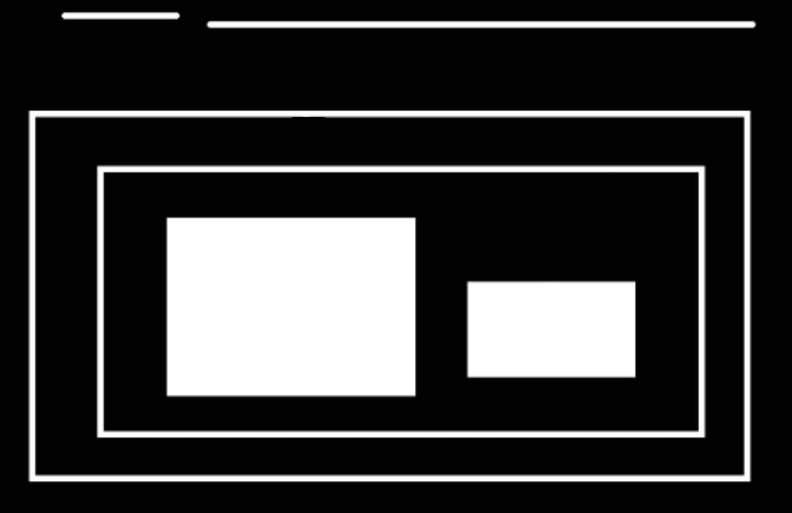
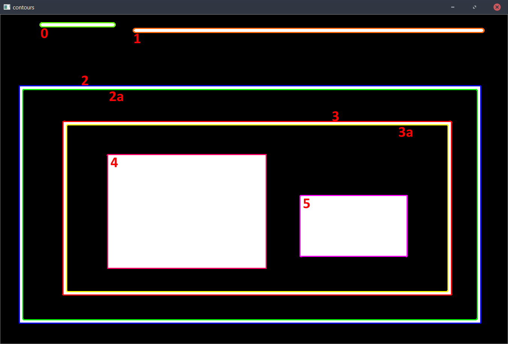
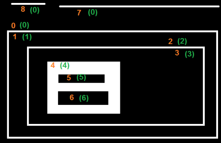

轮廓阶层
通常我们使用findContours()函数来检测图像中的对象。有时对象位于不同的位置。但是在某些情况下，某些形状在其他形状内。就像嵌套的图像一样。在这种情况下，我们将外部的那个称为父级，将内部的那个称为子级。这样，图像中的轮廓彼此之间就具有某种关系。并且我们可以指定一个轮廓如何相互关联，例如，是其他轮廓的子轮廓，还是父轮廓等。这种关系的表示称为层次结构(Hierarchy)。我们拿以下图像为例：
整个图可分成以下轮廓：
在此图像中，我用0-5编号了全部轮廓。2和2a个别表示最外面的方形的外部和内部轮廓。
在此，轮廓0,1,2都是属于最外部的轮廓。可以说，它们都处于第0层次结构中，或者说都处于相同的层次结构级别。
轮廓2a可以将其视为轮廓2的子级（轮廓2是轮廓2a的父级）。因此，使其处于第1层次结构中。同样，轮廓3是轮廓2的子级，它位于下一个层次结构中。最后，轮廓4,5是轮廓3a的子级，它们位于最后的层次结构级别。从编号方式上来说，轮廓4是轮廓3a的第一个子元素（其实正真来说不一定。也可以是轮廓5）。
OpenCV中的层次结构表示
因此，每个轮廓都有有关的层次结构，谁是其子级，谁是其父级等的信息。OpenCV将其表示为四个值的数组：Vec4i {Next，Previous，First_Child，Parent}
Next 表示在同个层次中，此轮廓的下一个轮廓id。如果没有下一个，则为-1.Previous 即Next的相反，是此轮廓的上一个。如果为无，则-1.
First_Child 指的是此轮廓中的第一个子轮廓的id。如没，则-1.
Parent 则为First_Child相反，是指此轮廓的父轮廓。如没，则-1.
但是轮廓id是指什么？
从上章我们学习了findContours。它返回的是contours和hierarchy. contours为一个装有一排坐标点向量的向量(vector<vector<Point> >)。而hierarchy则是装有一排向量的向量(vector<<Vec4i> >)，每个向量内存4个int。所以，id指的是某个轮廓在contours列内的索号。
另外，contours和hierarchy都有一样的长度，contours[i]对应的也是hierarchy[i]
现在我们知道了OpenCV中使用的层次结构样式，我们可以借助上面给出的相同图像来检查OpenCV中的轮廓检索模式，即像RETR_LIST，RETR_TREE，RETR_CCOMP，RETR_EXTERNAL等模式是什么意思？
轮廓检测模式
RETR_LIST
从解释的角度来看，这是四个标志中最简单的一个。它只是检索所有轮廓，而不创建任何父子关系。在这个规则下，父子是平等的，他们只是轮廓。即它们都属于相同层次结构级别。因此，在这里，层次结构数组中的第3和第4项始终为-1。但是，依然地，Next和Previous术语将具有其相应的值。
下面是我得到的结果，每一行是相应轮廓的层次结构详细信息。例如，第一行对应于轮廓0，下一个轮廓为轮廓1，因此，Next=1，没有上一个轮廓，因此Previous=-1。如上所述，其余两个为-1。
我们打印出来全部值
for (int i=0; i<contours.size(); ++i)
{
std::cout << "Contour" << i << ": ";
for (int j=0; j<4; ++j)
{
std::cout << hierarchy[i][j] << ", ";
}
std::cout << std::endl;
}
Contour0: 1, -1, -1, -1, Contour1: 2, 0, -1, -1, Contour2: 3, 1, -1, -1, Contour3: 4, 2, -1, -1, Contour4: 5, 3, -1, -1, Contour5: 6, 4, -1, -1, Contour6: 7, 5, -1, -1, Contour7: -1, 6, -1, -1,
RETR_EXTERNAL
如果使用此模式，则仅返回最外部的轮廓。保留所有子轮廓。可以说，根据这项制度，只有每个“家庭”中的“老大”才能“得到照顾”。它不在乎这个“家庭”的其他成员:)。那么，在我们的图像中，有多少个极端的外部轮廓？即在等级0级别，只有3个，即轮廓线0,1,2，对吧？现在尝试使用此模式找到轮廓。在此，赋予每个元素的值也与上述相同。与上面的结果进行比较。以下是我得到的：
Contour0: 1, -1, -1, -1, Contour1: 2, 0, -1, -1, Contour2: -1, 1, -1, -1,
RETR_CCOMP
该模式检索所有轮廓并将它们排列为2级层次结构。即，对象的外部轮廓（即其边界）(白色轮廓)位于层次1中。并且对象（如果有）中的孔(黑色部分)的轮廓位于层次2中。如果黑色轮廓中又有任何白色轮廓，则其轮廓将仅再次放置在等级1中。以及它在里面的黑色轮廓又是等级2中。以此类推。我们可以用一个简单的图像来解释它。在这里，我用橙色标记了轮廓的顺序，并用绿色标记了它们所属的层次结构（1或2）。该顺序与OpenCV检测轮廓的顺序相同。

Contour0: 3, -1, 1, -1, Contour1: 2, -1, -1, 0, Contour2: -1, 1, -1, 0, Contour3: 5, 0, 4, -1, Contour4: -1, -1, -1, 3, Contour5: 7, 3, 6, -1, Contour6: -1, -1, -1, 5, Contour7: 8, 5, -1, -1, Contour8: -1, 7, -1, -1,
RETR_TREE
这是最后一个家伙，Perfect先生。它检索所有轮廓并创建完整的族层次列表。它甚至告诉，整个祖宗十八代 :)。 我使用上面的图像，重写了RETR_TREE的代码，根据OpenCV给出的结果对轮廓进行重新排序并对其进行分析。同样，橙色字母给出轮廓编号，绿色字母给出层次结构顺序。取轮廓0：在层次0中。同一层次结构中的下一个轮廓是轮廓7。没有上一个轮廓。子轮廓是轮廓1。没有父轮廓。因此数组为{7，-1, 1，-1}。
取轮廓2：在层次1中。同一层次没其他轮廓。没有上一个。子轮廓是轮廓3。父轮廓是轮廓1。因此数组为[-1，-1, 3, 1]。...
Contour0: 7, -1, 1, -1, Contour1: -1, -1, 2, 0, Contour2: -1, -1, 3, 1, Contour3: -1, -1, 4, 2, Contour4: -1, -1, 5, 3, Contour5: 6, -1, -1, 4, Contour6: -1, 5, -1, 4, Contour7: 8, 0, -1, -1, Contour8: -1, 7, -1, -1,